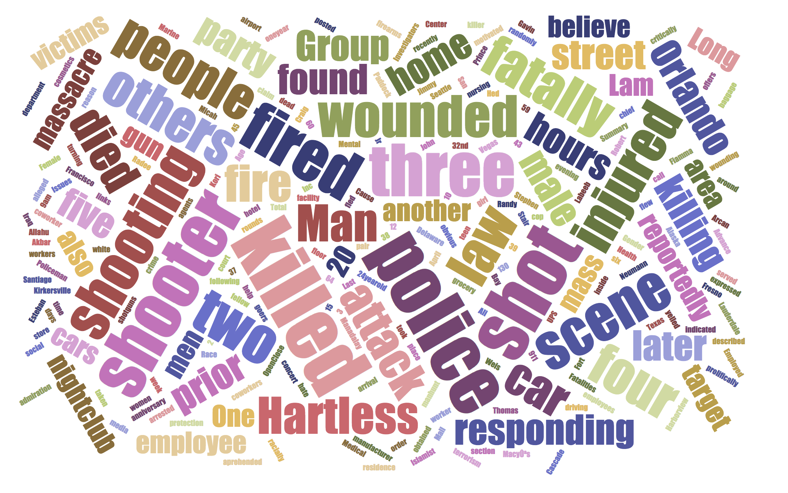

Mass Shootings Data Analysis

During 1966 to 2017, It has included 398 mass shootings in the United States. Mass shootings in the United States have been unfortunately become a disturbing trend that seems to be on the rise. As such, this project will focus on the different factors of mass shootings such as the number of total federal firearms licensees or the number of drugs arrested. For a comprehensive analysis, information will be pooled from numerous sources and a wide range of studies of different years. Some of the selected variables from the dataset are including location, date, total victims, mental health issue, latitude and longitude information. Moreover, the obtained information will be used in the provision of recommendations to the United States regarding ways of decreasing its high numbers of mass shootings.
This dataset is the data of Mass Shootings in the United States of America during 1966 to 2017. It has included 398 mass shootings in last 50 years in the United States. The dataset contains title, location, date, summary, fatalities, injured, total victims, mental health issue, race, gender, latitude and longitude information. In this project, I can use some data analysis and visualization to find out some questions such as how many shooters have some kind of mental health problem and visualize mass shootings on the U.S map by this latitude and longitude.